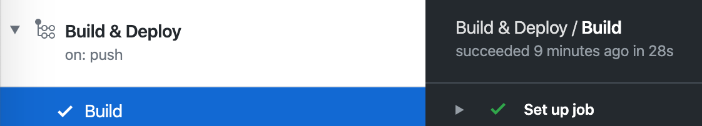
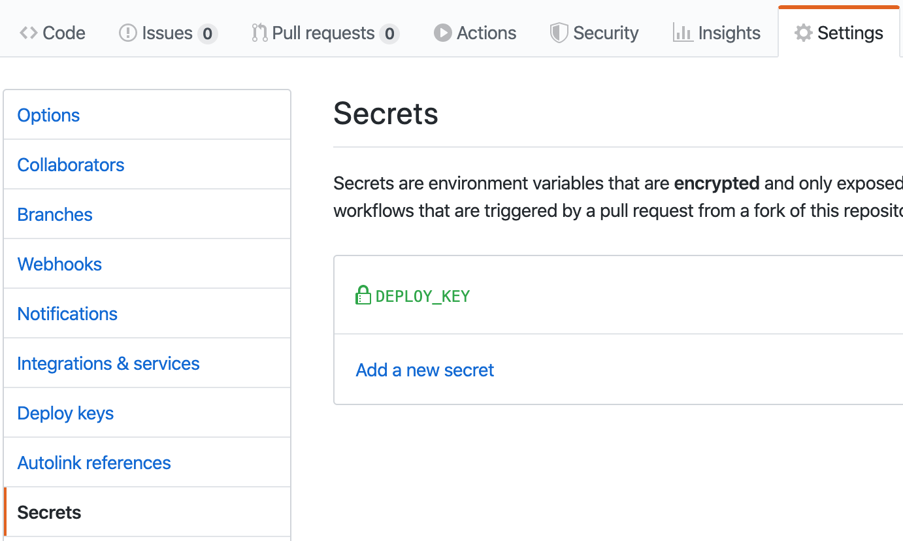
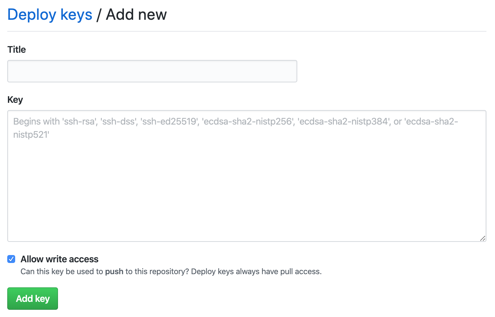
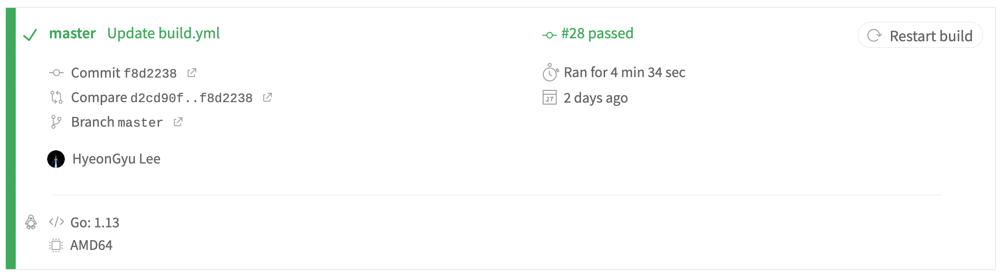

최근 GitHub Actions를 써봤는데 생각보다 괜찮아서 블로그 배포 방식도 이걸로 바꾸기로 했다. 기존에는 travis-ci를 사용했다. 아래와 같은 흐름으로 배포된다.
- vazrupe/blog master 브런치가 푸시된다.
git checkout한다. 테마를 submodule로 사용하기 때문에--recursive옵션을 설정해야 한다.go get으로hugo를 설치한다.hugo명령으로 블로그를 빌드한다.- vazrupe/vazrupe.github.io의 master 브런치에 public 디렉토리 내용을 업데이트 한다.
위 방법은 go get으로 설치하기 때문에 hugo의 버전을 지정할 수 없었는데, 마침 특정 hugo 버전을 사용할 수 있게 해주는 액션이 있었다.
워크플로우 설정의 각 부분은 다음과 같다.
name: Build & Deploy
on:
push:
branches:
- master
워크플로우의 이름과 언제 실행되는지를 나타낸다. master 브런치가 푸시될 때 이 워크플로우가 실행된다.
jobs:
build:
name: Build
runs-on: ubuntu-latest
steps:
워크플로우의 작업을 정의한다. 1개의 작업만 있고 build를 키로, Build를 이름으로 하는 작업을 정의한다.
ubuntu 최신 버전에서 실행되며, steps에 실제 작업이 나열된다.

위에서 설정한 워크플로우와 잡이 Actions에서 표시되는 것을 확인할 수 있다.
steps는 오브젝트 리스트로 되어 있다. 문법에 맞게 작성하면 된다.
- name: Checkout blog source
uses: actions/checkout@v1
with:
submodules: recursive
현재 저장소를 checkout 하는 명령이다. submodules: recursive 옵션으로 theme를 가져올 수 있다.
- name: Setup Hugo
uses: peaceiris/actions-hugo@v2
with:
hugo-version: "0.60.1"
- name: Build
run: hugo --config=config.toml,google_analytics.toml
컨테이너에 hugo를 가져와 소스를 빌드한다. 현재 최신인 0.60.1를 사용한다.
- name: Deploy
uses: peaceiris/actions-gh-pages@v2
env:
EXTERNAL_REPOSITORY: vazrupe/vazrupe.github.io
ACTIONS_DEPLOY_KEY: ${{ secrets.DEPLOY_KEY }}
PUBLISH_BRANCH: master
PUBLISH_DIR: ./public
빌드된 페이지를 배포한다. public 폴더를 vazrupe/vazrupe.github.io의 master 브런치에 배포한다.

secrets는 Settings > Secrets에 추가할 수 있다. 키는 GitHub에 SSH 키를 등록할 때와 같은 방식으로 생성하면 된다.

public 키는 배포할 저장소에 Settings > Deploy Keys에 쓰기 권한(Allow write access)을 주고 추가하면 된다. 여기에 사용된 액션 저장소로 가도 같은 안내를 확인할 수 있다.

실제 로그를 확인하면 28초 만에 빌드, 배포되었다.

기존에 사용하던 travis-ci의 빌드 시간이다. 속도가 훨씬 빨라졌고, 기존에는 할 수 없던 hugo 버전 설정도 가능하다.